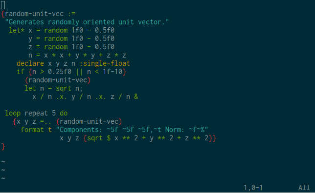
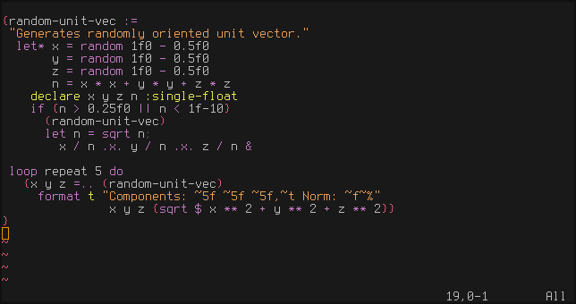

Viktor Cerovski, July 2019.

BINFIX (blend from "Binary Infix") is a powerful infix syntax notation for S-expressions of Common LISP ranging from simple arithmetic and logical forms to whole programs.
NEW FEATURE (July 2019): let supports multiple-value- and
destructuring-bind.
NEW FEATURES (July 2019): Introduced => for writing cond forms,
use of ? is depreciated. Introduced BINFIX with-slots.
NEW FEATURE (Jun 2019): B-terms, allowing indexing-like operations.
There are a few important new features still to come.
One of them, available from v0.16, is use of a single ; symbol as a
form-separating symbol in implicit-progn, expression
terminator for SETFs, or as end of LET binds
symbol or local functions definition.
There is also def, for defining things, and the latest is
writing standard LISP definitions without outer parens.
Once the rest of them have been implemented, BINFIX will go to RC and then to reference 1.0 version.
Quicklisp makes the downloading/installation/loading trivial:
(ql:quickload :binfix)
After loading the package, the next step is to allow use of its symbols
(use-package :binfix)
System can be tested via
(asdf:test-system :binfix)
Supported LISP implementations are SBCL (also used for development,) Clozure CL, ECL (tested with v15.3.7 and v16.1.3) and ABCL, while CLISP as of this release is not supported.
BINFIX shadows @ in Clozure CL and ECL, as well as var (sb-debug:var) and
struct (sb-alien:struct) in SBCL.
The latest version is available at github, and can be obtained by
git clone https://github.com/vcerovski/binfix
There is also a syntax-highlighting file for vim editor, binfix.vim.
Its installation consists of copying it into vimrc/syntax folder, which is
on Linux located at ~/.vim/syntax (should be created if it doesn't exist.)
Once installed, after loading a LISP file, LISP+BINFIX syntax highlighting
can be activated by :set syntax=binfix. Loading can be done automatically
by adding
filetype on
au BufNewFile,BufRead *.lisp,*.cl set syntax=binfix
to .vimrc.
BINFIX rewrites a B-expression (B-expr) into an S-expression,
written using curly brackets {...}, and may contain, in addition to
symbols, constants, S-exprs and B-exprs, also B-operations (B-ops) and
B-terms. Bops are just symbols that BINFIX recognizes and prioritizes
according to each Bop's precedence (priority). In addition to priority,
each Bop may have properties, which further specify how to handle Bop's
left- and right-hand side. B-term is a B-op that works from within B-expr
to allow indexing-like operations.
BINFIX is a free-form notation (just like S-expr), i.e any number of empty spaces (including tabs and newlines) between tokens is treated the same as a single white space.
Generally, quoting a BINFIX expression in REPL will produce the corresponding S-expression.
For easier comparison of input and output forms in following examples, LISP
printer is first setq (Bop =.) to lowercase output with
{*print-case* =. :downcase}
=> :downcase
Classic math stuff:
{2 * 3 + 4}
=> 10
'{a * {b + c}}
=> (* a (+ b c))
'{- {x + y} / x * y}
=> (- (/ (+ x y) (* x y)))
'{0 < x < 1 && y >= 1 || y >= 2}
=> (or (and (< 0 x 1) (>= y 1)) (>= y 2))
'{- f x - g x - h x}
=> (- (- (f x)) (g x) (h x))
Expressions like {(f x y) * (g a b)} and {{f x y} * {g a b}} generally
produce the same result. The inner brackets, however, can be removed:
'{sqrt x * sin x}
=> (* (sqrt x) (sin x))
'{A ! i .= B ! j + C ! k}
=> (setf (aref a i) (+ (aref b j) (aref c k)))
'{a ! i j += b ! i k * c ! k j}
=> (incf (aref a i j) (* (aref b i k) (aref c k j)))
'{listp A && car A == 'x && cdr A || A}
=> (or (and (listp a) (eql (car a) 'x) (cdr x)) a)
Operation :. stands for cons. For instance,
{-2 :. loop for i to 9 collect i}
=> (-2 0 1 2 3 4 5 6 7 8 9)
with the familiar behavior:
{1 :. 2 :. 3 equal '(1 2 . 3)}
=> t
{1 :. 2 :. 3 :. {} equal '(1 2 3)}
=> t
lambda'{x -> sqrt x * sin x}
=> (lambda (x) (* (sqrt x) (sin x)))
'{x :single-float -> sqrt x * sin x}
=> (lambda (x) (declare (type single-float x)) (* (sqrt x) (sin x)))
'{x y -> {x - y}/{x + y}}
=> (lambda (x y) (/ (- x y) (+ x y)))
Mixing of notations works as well, so each of the following
{x y -> / (- x y) (+ x y)}
{x y -> (- x y)/(+ x y)}
{x y -> (/ (- x y) (+ x y))}
produces the same form.
Fancy way of writing {2 * 3 + 4}
{x -> y -> z -> x * y + z @ 2 @ 3 @ 4}
=> 10
Quoting reveals the expanded S-expr
'{x -> y -> z -> x * y + z @ 2 @ 3 @ 4}
=>
(funcall (funcall (funcall
(lambda (x) (lambda (y) (lambda (z) (+ (* x y) z))))
2) 3) 4)
Indeed, @ is left-associative, standing for funcall.
More complicated types can be also explicitly given after an argument,
'{x :|or symbol number| -> x :. x}
=>
(lambda (x) (declare (type (or symbol number) x)) (cons x x))
Mappingsmapcar is also supported:
'{x -> sin x * sqrt x @. (f x)}
=>
(mapcar (lambda (x) (* (sin x) (sqrt x))) (f x))
Alternatively, it is possible to use the expression-termination symbol ;,
{x -> sin x * sqrt x @. f x;}
to the same effect.
reduce is represented by @/,
'{#'max @/ x y -> abs{x - y} @. a b}
=>
(reduce #'max (mapcar (lambda (x y) (abs (- x y))) a b))
and other maps have their @'s as well.
defunFactorial fun:
'{f n :integer := if {n <= 0} 1 {n * f {1- n}}}
=>
(defun f (n)
(declare (type integer n))
(if (<= n 0)
1
(* n (f (1- n)))))
Function documentation, local declarations, local bindings and comments have a straightforward syntax:
'{g x := "Auxilary fn."
declare (inline)
let x*x = x * x; ;; Note binds termination via ;
x*x / 1+ x*x}
=>
(defun g (x)
"Auxilary fn."
(declare (inline))
(let ((x*x (* x x)))
(/ x*x (1+ x*x))))
&optional is optionalExplicitly tail-recursive version of f
'{fac n m = 1 :=
declare (integer m n)
if {n <= 0} m
{fac {n - 1} {n * m}}}
=>
(defun fac (n &optional (m 1))
(declare (integer m n))
(if (<= n 0)
m
(fac (- n 1) (* n m))))
As you may by now expect, the following is also permitted
{fac n :integer m :integer = 1 :=
if {n <= 0} m
{fac {n - 1} {n * m}}}
supplied-p variable var for an optional/keyword argument is given by ?var
after the assignment.
{f x y = 0 ?supplied-y &key z = 0 ?supplied-z :=<body expr>},
where, within <body expr>, boolean variables supplied-y and supplied-z
are available (for the standard check whether respective values were provided
in the call of f.)
Version of fac with a local recursive function f:
{fac n :integer :=
labels
f n m := {if {n = 0} m
{f (1- n) {n * m}}}
f n 1}
Another syntax to specify a local function is to use a single ; as in
{fac n :integer :=
labels
f n m := if {n = 0} m
{f (1- n) {n * m}};
f n 1}
All three above definitions of fac are transformed by binfix to
(defun fac (n)
(declare (type integer n))
(labels ((f (n m)
(if (= n 0)
m
(f (1- n) (* n m)))))
(f n 1)))
which can be demonstrated by simply evaluating the quoted expressions.
The same syntax is used also in the case of flet and macrolet.
defmethodThe following two generic versions of f
'{f n :integer :- if {n <= 0} 1 {n * f {1- n}}}
'{f (n integer):- if {n <= 0} 1 {n * f {1- n}}}
both produce
(defmethod f ((n integer))
(if (<= n 0)
1
(* n (f (1- n)))))
:- supports also eql-specialization via == op, analogous to
the way = is used for optional arguments initialization, as well as an
optional method qualifier, given as the first argument after the method name,
that can be either a keyword or an atom surrounded by parens (i.e :around,
(reduce) etc.)
defmacroMacros are defined via :== operation, similar to the previous examples.
See Sec. Support for macros.
The examples shown so far demonstrate the possibility to type-annotate
symbols in binds and lambda-lists by an (optional) keyword representing
the type (for instance :fixnum, :my-class, :|simple-array single-float|,
:|or symbol number|, :|{symbol or number}|, etc.)
Bops that represent LISP forms which allow declaration(s), in BINFIX can
have in addition to the standard (declare ...) form also unparenthesized
variant:
'{f x :fixnum y = 2 :=
declare (inline)
declare (fixnum y)
x + y ** 2}
=>
(defun f (x &optional (y 2))
(declare (type fixnum x))
(declare (inline))
(declare (fixnum y))
(+ x (expt y 2)))
Another way to declare x and y is
'{f x y = 2 :=
declare x y :fixnum
declare (inline)
x + y ** 2}
=>
(defun f (x &optional (y 2))
(declare (inline))
(declare (fixnum x y))
(+ x (expt y 2)))
Operation :-> can be used to specify function type. For example, in
SBCL 1.1.17 function sin has declared type that can be written as
'{number :-> single-float -1.0 1.0 ||
double-float -1.0 1.0 ||
complex single-float ||
complex double-float .x. &optional}
=>
(function (number)
(values
(or (single-float -1.0 1.0)
(double-float -1.0 1.0)
(complex single-float)
(complex double-float))
&optional))
Function fac with a local function from this example
can have its type declared as
'{fac n :integer :=
labels
f n m := if {n = 0} m
{f (1- n) {n * m}};
declare f {integer integer :-> integer}
f n 1}
=>
(defun fac (n)
(declare (type integer n))
(labels ((f (n m)
(if (= n 0)
m
(f (1- n) (* n m)))))
(declare (ftype (function (integer integer) integer) f))
(f n 1)))
Declaration which annotates that symbol value of a symbol is a function can be
achieved by using -> instead of :-> in declaration of the symbol. For
instance:
'{f x :integer :=
let f = x -> 1+ x;
declare f {integer -> integer}
{flet f x := 1- x;
declare f {integer :-> integer}
cons (f x) {f @ x}}}
=>
(defun f (x)
(declare (type integer x))
(let ((f (lambda (x) (1+ x))))
(declare (type (function (integer) integer) f))
(flet ((f (x)
(1- x)))
(declare (ftype (function (integer) integer) f))
(cons (f x) (funcall f x)))))
which has the expected behavior: (f 0) => (-1 . 1)
Type definitions are given using :type= OP, as in
`{mod n :type= `(integer 0 (,n))}
=>
(deftype mod (n) `(integer 0 (,n)))
defProgram typically consists of a number of definitions of functions,
constants, parameters, types, etc. The operation def is introduced
to facilitate their easy writing:
'{def parameter *x* = 1 *y* = 2
def struct point x y z
def f x := sqrt x * sin x}
=>
(progn
nil
(defparameter *x* 1)
(defparameter *y* 2)
(defstruct point x y z)
(defun f (x) (* (sqrt x) (sin x))))
As it is clear from the example, the definitions are wrapped up in progn.
More detailed definitions are also straightforward to specify:
'{def parameter
*y* :single-float = 1f0
*z* :single-float = 1f0;
struct point "Point"
:print-function {p s d ->
declare (ignore d)
with-slots x y z :_ p
format s "#<~$ ~$ ~$>" x y z}
:constructor create-point (x y = *y* z = *z*)
x :single-float = 0f0
y :single-float = 0f0
z :single-float = 0f0
def point+= p :point q :point :=
p _'x += q _'x;
p _'y += q _'y;
p _'z += q _'z;
p
def point-= p :point q :point :=
with-slots x y z :_ p
with-slots dx = x dy = y dz = z :_ q
x -= dx;
y -= dy;
z -= dz;
p}
=>
(progn
(declaim (type single-float *y*)
(type single-float *z*))
(defparameter *y* 1.0)
(defparameter *z* 1.0)
(defstruct
(point
(:print-function
(lambda (p s d)
(declare (ignore d))
(with-slots (x y z)
p
(format s "#<~$ ~$ ~$>" x y z))))
(:constructor create-point (x &optional (y *y*) (z *z*))))
"Point"
(x 0.0 :type single-float)
(y 0.0 :type single-float)
(z 0.0 :type single-float))
(defun point+= (p q)
(declare (type point p)
(type point q))
(incf (slot-value p 'x) (slot-value q 'x))
(incf (slot-value p 'y) (slot-value q 'y))
(incf (slot-value p 'z) (slot-value q 'z))
p)
(defun point-= (p q)
(declare (type point p)
(type point q))
(with-slots (x y z)
p
(with-slots ((dx x) (dy y) (dz z))
q
(decf x dx)
(decf y dy)
(decf z dz)
p))))
def class syntax is like defclass without parens. For this to work, class
options (:documentation and :metaclass) have to be given before
description of slots, while :default-initargs comes last as usual, just
unparenthesized (see example.)
defining of symbols follows the same syntax as let binding, which
is covered next.
BINFIX allows writing of standard LISP definition forms without outer parens, as in
'{declaim (fixnum a b c)
defvar a 0
defvar b 1 "variable b"
defvar c 2}
=>
(progn
(declaim (fixnum a b c))
(defvar a 0)
(defvar b 1 "variable b")
(defvar c 2))
This extends to all Common LISP def-forms, declaim and proclaim.
The result is wrapped up in a progn.
LET symbol-binding forms (let, let*, symbol-macrolet, etc) in BINFIX use
= with an optional type-annotation:
'{let x :bit = 1
y = {2 ** 3}
z = 4
x + y * z}
=>
(let ((x 1) (y (expt 2 3)) (z 4))
(declare (type bit x))
(+ x (* y z)))
New feature: BINFIX let supports multiple-value-bind and
destructuring-bind
A single ; can be used as a terminator of bindings:
'{let x :bit = 1
y = 2 ** 3
z = f a;
x + y * z}
=>
(let ((x 1) (y (expt 2 3)) (z (f a)))
(declare (type bit x))
(+ x (* y z)))
Finally, a single ; can also be used to separate forms in implicit-progn,
as in
'{let x :bit = 1
y = 2 ** 3
z = f a; ;; end of binds
print "Let binds"; ;; 1st form
x + y * z} ;; 2nd form of implicit-progn
=>
(let ((x 1) (y (expt 2 3)) (z (f a)))
(declare (type bit x))
(print "Let binds")
(+ x (* y z)))
Nesting of lets without parens follows the right-associativity
'{let a = f x;
if a
(g x)
let b = h x;
f b}
=>
(let ((a (f x)))
(if a
(g x)
(let ((b (h x)))
(f b))))
Note the three levels of parens gone.
In addition to =., =... and .=, Bops representing, respectively, a single
setq, multiple-value-setq and setf assignment, multiple assignments via
SETs can be done using =,
'{psetq x = cos a * x + sin a * y
y = - sin a * x + cos a * y}
=>
(psetq x (+ (* (cos a) x) (* (sin a) y))
y (+ (- (* (sin a) x)) (* (cos a) y)))
If it is necessary to remove repeating sin a and cos a,
it is easy to use let,
{let sin = sin a
cos = cos a;
psetq x = cos * x + sin * y
y = - sin * x + cos * y}
and in the case of SETF assignments, RHS are represented with a single expression,
'{psetf a ! 0 = {a ! 1}
a ! 1 = {a ! 0}}
=>
(psetf (aref a 0) (aref a 1)
(aref a 1) (aref a 0))
Alternatively, it is possible to use a single ; as an expression-termination
symbol,
'{psetf a ! 0 = a ! 1; ;; expr. termination via single ;
a ! 1 = a ! 0}
=>
(psetf (aref a 0) (aref a 1)
(aref a 1) (aref a 0))
It is also possible to mix infix SETFs with other expressions:
'{f x + setf a = b
c = d;
* h a c}
=>
(+ (f x)
(*
(setf a b
c d)
(h a c)))
setf and setq can be also represented via .= and =. Bops,
and the main difference is in priority---the latter can be embedded
within lambdas without parens. For instance, both
'{a -> {setf car a = 0} .@ list}
and
'{a -> car a .= 0 .@ list}
=>
(mapc (lambda (a) (setf (car a) 0)) list)
In the case of implicit-progn within lambda,
'{a b -> {setf car a = car b;
car b = 0}
.@ l1 l2}
=>
(mapc (lambda (a b)
(setf (car a) (car b)
(car b) 0))
l1 l2)
while
'{a b -> car a .= car b;
car b .= 0
.@ l1 l2}
=>
(mapc (lambda (a b)
(setf (car a) (car b))
(setf (car b) 0))
l1 l2)
prognAn implicit progn in BINFIX is achieved with a single ; separating the
forms forming the progn. In all cases (->, :=, :- and LETs) the syntax
is following that of the LET example above.
As expected, other progs have to be explicitly given,
'{x -> prog2 (format t "Calculating... ")
{f $ x * x}
(format t "done.~%")}
or
'{x -> prog2
format t "Calculating... ";
f {x * x};
format t "done.~%"}
both producing the following form
(lambda (x)
(prog2 (format t "Calculating... ") (f (* x x)) (format t "done.~%")))
Since BINFIX is a free-form notation, the following one-liner also works:
'{x -> prog2 format t "Calculating... "; f{x * x}; format t "done.~%"}
Bop <& stands for prog1,
'{x -> {f {x * x} <&
format t "Calculation done.~%"}}
=>
(lambda (x) (prog1 (f (* x x)) (format t "Calculation done.~%")))
while multiple-value-prog1 is given by <&...
$plittersInfix $ is a vanishing OP, leaving only its arguments,
effectively splitting the list in two parts.
'{f $ g $ h x y z}
=> (f (g (h x y z)))
Effect of $ is similar to $ in Haskell, except that here it works
with Sexpr, so it is also possible to write
'{declare $ optimize (speed 1) (safety 1)}
or
'{declare {optimize $ speed 3; safety 1}}
both of which evaluate to
(declare (optimize (speed 1) (safety 1)))
$ also allows writing a shorter cond, as in
(cond {p x $ f x}
{q x $ g x}
{r x $ h x}
{t $ x})
compared to the equivalent
(cond ((p x) (f x))
((q x) (g x))
((r x) (h x))
(t x))
$ parenthesizes its l.h.s, leaving r.h.s. unchanged. Another splitter is .$,
which does the opposite, namely parenthesizes its r.h.s leaving l.h.s unchanged,
providing yet another way to omit parens:
'{loop for i to n
append loop for j to m
collect .$ i :. j}
=>
(loop for i to n
append (loop for j to m
collect (cons i j)))
cond, case, ...) (new feature)An alternative, depreciated, syntax to describe multiple-choice forms is to
use ? and ;
{cond p x ? f x;
q x ? g x;
r x ? h x;
t ? x}
Preferred way to write such a form is to use => instead:
{cond p x => f x;
q x => g x;
r x => h x;
t => x}
Similarly, case-like forms accept a B-expr before =>-clauses,
{ecase f x;
0 1 2 => #\a;
3 4 => #\b;
6 => #\c}
where in simple cases => can be omitted
'{case f a; 1 a; 2 b; 3 c}
=>
(case (f a) (1 a) (2 b) (3 c))
Writing of implicit-progn in each clause is also supported in a straightforward way
{ecase f x;
0 1 2 => print "a"; g #\a;
3 4 => print "b"; g #\b;
6 => print "c"; h #\c}
=>
(ecase (f x)
((0 1 2) (print "a") (g #\a))
((3 4) (print "b") (g #\b))
(6 (print "c") (h #\c)))
See also ordinal example below.
BINFIX let supports binding of multiple values as well as
destructuring,
`{let a = 1 b = 2 c = 3
let x y z = values 1 2 3;
let (p (q = 2) r = 3) = '(1 nil);
a = x = p = 1 &&
b = y = q = 2 &&
c = z = r = 3}
=>
(let ((a 1) (b 2) (c 3))
(multiple-value-bind (x y z) (values 1 2 3)
(destructuring-bind (p (&optional (q 2)) &optional (r 3)) '(1 nil)
(and (= a x p 1)
(= b y q 2)
(= c z r 3)))))
which evaluates to t.
Multiple values (values) are represented by .x. as well as values,
multiple-value-bind by =.. , and destructuring-bind by ..=
'{a (b) c ..= (f x) a + 1 .x. b + 2 .x. c + 3}
=>
(destructuring-bind (a (b) c) (f x) (values (+ a 1) (+ b 2) (+ c 3)))
Another way to write the same expr:
'{a (b) c ..= (f x) values a + 1; b + 2; c + 3}
multiple-value-call is represented by .@.
'{#'list .@. 1 '(b 2) 3}
=>
(multiple-value-call #'list 1 '(b 2) 3)
=>
(1 (b 2) 3)
Both ..= and =.. can be nested,
'{a b c =.. (f x)
x y z =.. (g z)
a * x + b * y + c * z}
=>
(multiple-value-bind (a b c)
(f x)
(multiple-value-bind (x y z) (g z) (+ (* a x) (* b y) (* c z))))
multiple-value-setq is given by =...
Loops can be also nested without writing parens:
'{loop for i = 1 to 3
collect loop for j = 2 to 4
collect {i :. j}}
=>
(loop for i = 1 to 3
collect (loop for j = 2 to 4
collect (cons i j)))
Hash tables are supported via ~! (gethash),
~~ (remhash) and @~ (maphash) Bops. See also indexing.
Association lists are accessible via !~~ (assoc) and ~~! (rassoc).
Mappings and function applications are what @-ops are all about,
as summarized in the following table,
@ | funcall |
@. | mapcar |
@.. | maplist |
@n | mapcan |
@.n | mapcon |
.@ | mapc |
..@ | mapl |
@/ | reduce |
@~ | maphash |
@@ | apply |
.@. | multiple-value-call |
They all have the same priority and are right-associative. Since they bind
weaker than ->, they are easy to string together with lambdas, as in a
map-reduce expr.
{'max @/ x y -> abs{x - y} @. a b}
Indexing can be done using square brackets, [...], by default set to
aref,
'{a[i;j] += b[i;k] * c[k;j]}
=>
(incf (aref a i j) (* (aref b i k) (aref c k j)))
or using double-square brackets, [[...]], with one or two arguments, by
default set to indexing of hash table,
'{ table[[key; default]] }
=>
(binfix::hashget table key default)
where default argument is optional, which macroexpands into
(gethash key table default)
What square-brackets represent can be changed using setbinfix.
The following table summarizes indexing Bops, from the weakest to the strongest binding:
th-cdr | nthcdr |
th-bit | logbitp |
!..
th-value | nth-value |
!. | svref |
.! | elt |
th | nth |
!!. | row-major-aref |
.!!. | bit |
!! | aref |
~!
!~~
~~! | gethash
assoc
rassoc |
.!. | bit |
! | aref |
!.. and th-value are mere synonyms and thus of the same priority, as are
.! !. and !!., while !!
is a weaker binding !, allowing easier writing of expr. with arithmetic
operations with indices, like
{a !! i + j}
{a !! i + j; 1- k;}
etc. In the same relation stand .!. and .!!.
Indexing of arrays is by default supported by the new square-brackets BINFIX
reader, so the above two examples can be written as {a[i + j]} and
{a[i + j; 1- k]}, respectively.
Integer bit-logical BINFIX ops are given with a . after the name of OP,
while bit-array version of the same OP with . before and after the name.
For instance, {a or. b} transforms to (logior a b), while
{a .or. b} transforms to (bit-ior a b).
If BINFIX terms only are inserted under backquote, everything should work fine,
'{let t1 = 'x
t2 = '{x + x}
`{x -> ,t1 / ,t2}}
=>
(let ((t1 'x) (t2 '(+ x x)))
`(lambda (x) (/ ,t1 ,t2)))
Replacing, however, BINFIX operations inside a backquoted BINFIX will not
work. This is currently not considered as a problem because direct call of
binfix will cover some important cases of macro transformations in a
straightforward manner:
{m x y op = '/ type = :double-float :==
let a = (gensym)
b = (gensym)
binfix `(let ,a ,type = ,x
,b ,type = ,y
{,a - ,b} ,op {,a + ,b})}
Now macro m works as expected:
(macroexpand-1 '(m (f x y) {a + b}))
=>
(let ((#:g805 (f x y)) (#:g806 (+ a b)))
(declare (type double-float #:g806)
(type double-float #:g805))
(/ (- #:g805 #:g806) (+ #:g805 #:g806)))
t
or,
(macroexpand-1 '(m (f x y) {a + b}) * :double-float)
=>
(let ((#:g817 (f x y)) (#:g818 (+ a b)))
(declare (type double-float #:g817)
(type double-float #:g818))
(* (- #:g817 #:g818) (+ #:g817 #:g818)))
t
See more in implementation details
ordinalConverting an integer into ordinal string in English can be defined as
{ordinal i :integer :=
let* a = i mod 10
b = i mod 100
suf = {cond
a = b = 1 || a = 1 && 21 <= b <= 91 => "st";
a = b = 2 || a = 2 && 22 <= b <= 92 => "nd";
a = b = 3 || a = 3 && 23 <= b <= 93 => "rd";
t => "th"}
format () "~D~a" i suf}
It can be also written in a more "lispy" way without parens as
{ordinal1 i :integer :=
let* a = i mod 10
b = i mod 100
suf = {cond
= a b 1 or = a 1 and <= b 21 91 => "st";
= a b 2 or = a 2 and <= b 22 92 => "nd";
= a b 3 or = a 3 and <= b 23 93 => "rd";
t => "th"}
format () "~D~a" i suf}
which can be tried using @. (mapcar)
{#'ordinal @. '(0 1 12 22 43 57 1901)}
=> ("0th" "1st" "12th" "22nd" "43rd" "57th" "1901st")
(This example is picked up from Rust blog)
joinAPL-ish joining of things into list:
{
defgeneric join (a b) &
join a :list b :list :- append a b &
join a :t b :list :- cons a b &
join a :list b :t :- append a (list b) &
join a :t b :t :- list a b &
defbinfix ++ join
}
; Must close here in order to use ++
{let e = '{2 in 'x ++ '(1 2 3) ++ '((a)) ++ -1 * 2}
format t "~S~%=> ~S" e (eval e)}
Evaluation of the above returns t and prints the following
(member 2 (join 'x (join '(1 2 3) (join '((a)) (* -1 2)))))
=> (2 3 (a) -2)
Another way to write join is as a single defgeneric definition, using def
generic,
{def generic join a b;
"Generic join."
a :list b :list :- append a b;
a :t b :list :- a :. b;
a :list b :t :- `(,@a ,b);
a :t b :t :- list a b}
which expands into
(progn
(defgeneric join
(a b)
(:documentation "Generic join.")
(:method ((a list) (b list)) (append a b))
(:method ((a t) (b list)) (cons a b))
(:method ((a list) (b t)) `(,@a ,b))
(:method ((a t) (b t)) (list a b))))
values-bindMacro multiple-value-bind with symbol _ in variable list standing for
an ignored value can be defined as
{values-bind v e &rest r :==
let* _ = ()
vars = a -> if {a == '_} {car $ push (gensym) _} a @. v;
`(multiple-value-bind ,vars ,e
,@{_ && `({declare $ ignore ,@_})}
,@r)}
So, for instance,
(macroexpand-1 '(values-bind (a _) (truncate 10 3) a))
=>
(multiple-value-bind (a #:g823) (truncate 10 3) (declare (ignore #:g823)) a)
t
forNested BINFIX lambda lists can be used in definitions of macros, as in the following example of a procedural for-loop macro
{for (v :symbol from below by = 1) &rest r :==
`(loop for,v fixnum from,from below,below ,@{by /= 1 && `(by,by)}
do ,@r)}
Now
(macroexpand-1 '(for (i 0 n)
{a ! i .= 1+ i}))
=>
(loop for i fixnum from 0 below n
do (setf (aref a i) (1+ i)))
t
An example from Common LISP the Language 2nd ed. where Cartesian coordinates are converted into polar coordinates via change of class can be straightforwardly written in BINFIX as
{def class position () ();
class x-y-position (position)
x :initform 0 :initarg :x
y :initform 0 :initarg :y;
class rho-theta-position (position)
rho :initform 0
theta :initform 0
def update-instance-for-different-class :before
old :x-y-position
new :rho-theta-position &key :-
;; Copy the position information from old to new to make new
;; be a rho-theta-position at the same position as old.
let x = old _'x
y = old _'y;
new _'rho .= sqrt {x * x + y * y};
new _'theta .= atan y x
;;; At this point an instance of the class x-y-position can be
;;; changed to be an instance of the class rho-theta-position
;;; using change-class:
& p1 =. make-instance 'x-y-position :x 2 :y 0
& change-class p1 'rho-theta-position
;;; The result is that the instance bound to p1 is now
;;; an instance of the class rho-theta-position.
;;; The update-instance-for-different-class method
;;; performed the initialization of the rho and theta
;;; slots based on the values of the x and y slots,
;;; which were maintained by the old instance.
}
where Steele's comments are left verbatim.
BINFIX can be included into packages by defpackage, with recommended (:use
:binfix) option. sbcl, ecl and ccl, however, intern certain symbols so
that simple import does not work and thus use of these symbols by binfix may(!)
lead to incorrect parsing. Here is then the implementation-sensitive
defpackage that creates my-package which properly imports all of BINFIX
symbols:
(defpackage :my-package (:use :cl :binfix)
#+sbcl (:shadowing-import-from :binfix :struct :var)
#+(ccl ecl) (:shadowing-import-from :binfix :@ :=>))
The following set of forms modify BINFIX behavior by adding/removing/redefining Bops. They must be evaluated before and outside B-exprs in which the modified behavior takes place.
(defbinfix Bop lisp-op priority &rest properties)
Macro function that defines new or redefines existing Bop to represent
lisp operation lisp-op (both of these arguments are symbols,) where
priority defines how weakly/strongly Bop binds its arguments (precedence,)
with given properties.
(setbinfix Bop list-op)
Macro function that associated with an existing Bop LISP symbol list-op.
In effect it redefines what Bop does without changing any of its properties.
Perhaps its most important role is to set what square-brackets in Bexpr represent. For instance,
(setbinfix binfix::index binfix::hashget)
sets B-terms a[k] to represent indexing of hashtable a by key k, while
(setbinfix binfix::index2 svref)
sets a[[i]] to represent (svref a i).
(rmbinfix Bop1 ... Bopn)
Macro function that removes specified Bops Bop1 ... Bopn. After this
macro form is executed, symbols Bop1 ... Bopn will not be interpreted as
Bops within B-expressions.
(keepbinfix Bop1 ... Bopn)
Keep only given Bops Bop1 ... Bopn and ;. After this macro form is
executed, only symbols Bop1 ...Bopn and ; will be interpreted as Bops
within B-expressions.
(keepbinfix) or (init-binfix)
After either one of these macro forms is executed, BINFIX is restored to its initial state.
BINFIX expression is written as a list enclosed in curly brackets { ... }
handled through LISP reader, so the usual syntax rules of LISP apply, e.g a+b
is a single symbol, while a + b is three symbols. Lisp reader after
tokenization calls the function binfix which does shallow transformation of
BINFIX into S-expr representation of the expression.
BINFIX uses a simple rewrite algorithm that divides a list in two, LHS and RHS of the lowest priority infix operator found within the list, then recursively processes each one.
Bootstrapping is done beginning with proto-BINFIX,
(defparameter *binfix*
'((|;| infix (progn))
(:== def defmacro)
(:= def defun)
(:- def defmethod)
( =. infix (setq))
(.= infix (setf))
(-> def-lambda)
($ infix ())
(symbol-macrolet let= symbol-macrolet)
(let let= let)
(let* let= let*)
(labels flet= labels)
(=.. var-bind multiple-value-bind)
(.x. unreduc .x. values)
(:. infix (cons))
(|| infix (or))
(&& infix (and))
(== infix (eql))
(=c= infix (char=))
(in infix (member))
( ! infix (aref))))
(defun binfix (e &optional (ops *binfix*))
(cond ((atom e) e)
((null ops) (if (cdr e) e (car e)))
(t (let* ((op (car ops))
(op.rhs (member (pop op) e)))
(if (null op.rhs)
(binfix e (cdr ops))
(let ((lhs (ldiff e op.rhs)))
(macroexpand-1
`(,@op ,lhs ,(cdr op.rhs)))))))))
(defmacro infix (op lhs rhs)
`(,@op ,(binfix lhs) ,(binfix rhs)))
(set-macro-character #\{
(lambda (s ch) (declare (ignore ch))
(binfix (read-delimited-list #\} s t))))
(set-macro-character #\} (get-macro-character #\) ))
which captures the basics of BINFIX.
Since v0.15, BINFIX interns a symbol consisting of a single ; char not
followed by ; char, while two or more consecutive ; are interpreted
as a usual LISP comment. This behavior is limited to BINFIX
expressions only, while outside of them the standard LISP rules apply.
The next bootstrap phase defines macros def, def-lambda, let=,
flet=, unreduc and var-bind, done in proto1.lisp,
{defmacro def (what args body)
`(,what ,@(if (atom args)
`(,args ())
`(,(car args),(cdr args)))
,(binfix body));
def-lambda args body :==
`(lambda ,(if (consp args) args `(,args))
,(binfix body));
let= let lhs body &aux vars :==
loop while {cadr body == '=}
do {push `(,(car body),(caddr body)) vars;
body =. cdddr body}
finally (return (let ((let `(,let ,(nreverse vars) ,(binfix body))))
(if lhs (binfix `(,@lhs ,let)) let)));
flet= flet lhs body &aux funs :==
loop for r = {'= in body} while r
for (name . lambda) = (ldiff body r)
do {push `(,name ,lambda ,(cadr r)) funs;
body =. cddr r}
finally {return let flet = `(,flet ,(reverse funs) ,(binfix body))
if lhs (binfix `(,@lhs ,flet)) flet};
unreduc op op-lisp lhs rhs :==
labels
unreduce e &optional args arg =
(cond {null e $ nreverse {binfix (nreverse arg) :. args}}
{car e == op $ unreduce (cdr e) {binfix (nreverse arg) :. args}}
{t $ unreduce (cdr e) args {car e :. arg}})
`(,op-lisp ,@(unreduce rhs `(,(binfix lhs))));
var-bind op lhs rhs :== `(,op ,lhs ,(car rhs) ,(binfix (cdr rhs)))}
which wraps up proto-BINFIX.
Since v0.15, BINFIX interns a symbol consisting of a single ; char not
followed by ; char, while two or more consecutive ; are interpreted
as starting a comment. This behavior is limited to BINFIX
expressions only, while outside of them the standard LISP rules apply.
The rest is written using proto-BINFIX syntax, and consists of handling of
lambda lists and lets, a longer list of OPs with properties, redefined
binfix to its full capability, and, finally, several interface functions for
dealing with OPs (lsbinfix, defbinfix and rmbinfix).
Priorities of operations in proto-BINFIX are given only relatively, with no numerical values and thus with no two operations of the same priority.
LHS and RHS of proto-BINFIX expressions refer to other proto-BINFIX expressions (since v0.22.3), which in particular means that there is no implicit-progn in proto-BINFIX let's and def's.
Since v0.20, symbol of a BINFIX operation has a list of properties stored into
the symbol property binfix::properties, which includes a numerically given
priority of the OP (which also considerably speeds up parsing.) The actual
value of number representing priority is supposed to be immaterial since only
relation to other Bops priority values is relevant. Defining new same-priority
Bops should be done via defbinfix with :as option, which may change priority
values of many other OPs.
Since shallow transformation into standard syntax is done by function binfix
invoked recursively by the reader, binfix cannot be directly called for
arbitrary macro transformation of BINFIX into BINFIX when standard macro
helpers BACKTICK, COMA and COMA-AT are used. The reason is that {...} is
invoked before them while the correct order would be after them.
Examples of successful combinations of backquoting and BINFIX are given
above.
The latest version of clisp I have tried is 2.49.93+ (2018-02-18), which
has two problems with BINFIX:
There seems to be a bug in set-macro-character (see
here.) Workaround is
possible, but BINFIX still doesn't work (while other implementations
tried do.)
Test subsystem of the current version of BINFIX uses
fiveam, which requires ASDF>=3.1,
which clisp does not seem to support. Workaround is of course possible
pending solving problem 1.
Provided binfix.vim file covers vim editor with a syntax-highlighting
extension, which is based and depends on lisp.vim that comes
bundled with vim.
Here are GUI and terminal looks:

(theme: solarized, font: Inconsolata Medium)

(theme: herald, font: Terminus)
| Property | Description | |
|---|---|---|
:def
| Operation (OP) is a definition requiring LHS to has a name and lambda list. | |
:defm
| OP is a definition requiring LHS to have a name followed by unparenthesized method lambda list. | |
:lhs-lambda
| OP has lambda list as its LHS. | |
:rhs-lbinds
| OP has let-binds at the beginning of its RHS, [symbol [keyword]* =
expr]* declaration* | |
:rhs-fbinds
| OP has flet-binds at the beginning of its LHS, including optional declarations. | |
:rhs-sbinds
| OP has symbol-binds as its RHS. They are let-binds without annotations or declarations. | |
:rhs-ebinds
| OP has expr-binds at the beginning of its RHS. | |
:unreduce
| All appearances of OP at the current level should be unreduced, i.e replaced with a single call with multiple arguments. | |
:left-assoc
| OP is left--associative (OPs are right-associative by default.) | |
:prefix
| OP is prefix with RHS being its arguments, given as one or more
atoms/exprs which can be also ;-separated.
| |
:prefix-left
| OP is prefix with RHS being its arguments, given as one or more
atoms/exprs which can be also ;-separated.
Resulting forms will be appended to the forms on the LHS.
| |
:also-prefix
| OP can be used as prefix when LHS is missing. | |
:also-unary
| OP can be used as unary when LHS is missing. | |
:also-postfix
| OP can be used as postfix when RHS is missing. | |
:lambda/expr
| OP takes lambda-list at LHS and an expression at RHS, followed by body. | |
:syms/expr
| OP takes a list of symbols as LHS (each with an optional [keyword-type](#types) annotation,) an expression as RHS followed by optional declarations and a BINFIX-expression. | |
:split
| OP splits the expr at this point. | |
:rhs-args
| OP takes LHS as 1st and RHS as remaining arguments, which can
be ;-separated Bexpr.
| |
:quote-lhs
| OP quotes LHS. | |
:quote-rhs
| OP quotes RHS. | |
:macro
| OP is a macro. | |
:progn
| OP is in a progn-monad. Currently
implemented in combination with :prefix,
:quote-rhs/:macro properties.
| |
:single
| OP requires to be the only OP in the current expr with its
priority. For example, reading {values a b .x. c}
reports an ambiguity error.
| |
:term
| OP is a B-term. For example, Bop binfix::index
makes{a (binfix::index i (1+ j))} become
(aref a i (1+ j)) (new feature)
| |
:rhs-implicit-progn symbol
| OP splits the RHS into blocks of Bexprs separated by
symbol and ;
(new feature)
|
BINFIX does not use symbols ~, % and ^. The use of splitter ? as a Bop
is depreciated and will be removed. The current plan is that these four
will be left for user-defined Bops.
Command (lsbinfix) prints the table of all Bops and their properties
from the weakest- to the strongest-binding Bop, with parens enclosing Bop(s) of
the same priority:
BINFIX LISP Properties
==============================================================================
( <& prog1
<&.. multiple-value-prog1 )
( & progn :progn )
( def binfix::defs-macro :progn :prefix :macro
defclass defclass :progn :prefix :quote-rhs
defstruct defstruct :progn :prefix :quote-rhs
deftype deftype :progn :prefix :quote-rhs
defparameter defparameter :progn :prefix :quote-rhs
defvar defvar :progn :prefix :quote-rhs
defconstant defconstant :progn :prefix :quote-rhs
define-condition define-condition :progn :prefix :quote-rhs
define-setf-expander define-setf-expander :progn :prefix :quote-rhs
binfix::define-setf-method binfix::define-setf-method :progn :prefix :quote-rhs
defsetf defsetf :progn :prefix :quote-rhs
defgeneric defgeneric :progn :prefix :quote-rhs
defmethod defmethod :progn :prefix :quote-rhs
define-method-combination define-method-combination :progn :prefix :quote-rhs
defun defun :progn :prefix :quote-rhs
defmacro defmacro :progn :prefix :quote-rhs
define-compiler-macro define-compiler-macro :progn :prefix :quote-rhs
define-symbol-macro define-symbol-macro :progn :prefix :quote-rhs
define-modify-macro define-modify-macro :progn :prefix :quote-rhs
declaim declaim :progn :prefix :quote-rhs
proclaim proclaim :progn :prefix :quote-rhs )
( cond cond :rhs-implicit-progn => :prefix
case case :rhs-implicit-progn => :prefix
ccase ccase :rhs-implicit-progn => :prefix
ecase ecase :rhs-implicit-progn => :prefix
typecase typecase :rhs-implicit-progn => :prefix
ctypecase ctypecase :rhs-implicit-progn => :prefix
etypecase etypecase :rhs-implicit-progn => :prefix )
( let let :rhs-lbinds
let* let* :rhs-lbinds
symbol-macrolet symbol-macrolet :rhs-lbinds
prog* prog* :rhs-lbinds
prog prog :rhs-lbinds
with-slots with-slots :rhs-slots
macrolet macrolet :rhs-fbinds
flet flet :rhs-fbinds
labels labels :rhs-fbinds )
( :== defmacro :def
:= defun :def
:- defmethod :defm
:type= deftype :def )
( block block :prefix
tagbody tagbody :prefix
catch catch :prefix
prog1 prog1 :prefix
prog2 prog2 :prefix
progn progn :prefix )
( ? nil :split )
( setq setq :rhs-sbinds
set set :rhs-sbinds
psetq psetq :rhs-sbinds )
( setf setf :rhs-ebinds
psetf psetf :rhs-ebinds )
( $ nil :split :rhs-args
.$ nil :split-left :rhs-args )
( .@ mapc :rhs-args
..@ mapl :rhs-args
@/ reduce :rhs-args
@. mapcar :rhs-args
@.. maplist :rhs-args
@n mapcan :rhs-args
@.n mapcon :rhs-args
@~ maphash
@@ apply :rhs-args
.@. multiple-value-call :rhs-args
@ funcall :rhs-args :left-assoc :also-postfix )
( :-> function :lhs-lambda )
( -> lambda :lhs-lambda )
( =.. multiple-value-bind :syms/expr
..= destructuring-bind :lambda/expr )
( values values :prefix :single
.x. values :unreduce :single )
( loop loop :prefix :quote-rhs )
( =... multiple-value-setq :quote-lhs
.= setf
+= incf
-= decf
=. setq
.=. set )
( || or :unreduce
or or :unreduce :also-prefix )
( && and :unreduce
and and :unreduce :also-prefix )
( === equalp :single
equal equal :single
== eql :single
eql eql :single
eq eq :single
~~ remhash :single
subtype-of subtypep :single )
( :|.| cons )
( in member )
( th-cdr nthcdr )
( =s= string= :single
=c= char= :single :unreduce
= = :single :unreduce :also-prefix
/= /= :single :unreduce :also-prefix
< < :single :unreduce :also-prefix
> > :single :unreduce :also-prefix
<= <= :single :unreduce :also-prefix
>= >= :single :unreduce :also-prefix )
( th-bit logbitp )
( ++ join )
( coerce coerce )
( !.. nth-value
th-value nth-value )
( th nth )
( .! elt
!. svref
!!. row-major-aref )
( .!!. bit :rhs-args )
( !! aref :rhs-args )
( ~! gethash :single :rhs-args
!~~ assoc :single
~~! rassoc :single )
( .eqv. bit-eqv :rhs-args
.or. bit-ior :rhs-args
.xor. bit-xor :rhs-args
.and. bit-and :rhs-args
.nand. bit-and :rhs-args
.nor. bit-nor :rhs-args
.not. bit-not :also-unary
.orc1. bit-orc1 :rhs-args
.orc2. bit-orc2 :rhs-args
.andc1. bit-andc1 :rhs-args
.andc2. bit-andc2 :rhs-args )
( dpb dpb :rhs-args )
( ldb ldb )
( ldb-test ldb-test )
( deposit-field deposit-field :rhs-args )
( mask-field mask-field )
( byte byte )
( eqv. logeqv :also-unary :unreduce )
( or. logior :also-unary :unreduce )
( xor. logxor :also-unary :unreduce )
( and. logand :also-unary :unreduce )
( nand. lognand )
( nor. lognor )
( test. logtest )
( orc1. logorc1 )
( orc2. logorc2 )
( andc1. logandc1 )
( andc2. logandc2 )
( << ash )
( lcm lcm :also-unary :unreduce )
( gcd gcd :also-unary :unreduce )
( mod mod )
( rem rem )
( min min :also-prefix :unreduce :single
max max :also-prefix :unreduce :single )
( + + :also-unary :unreduce )
( - - :also-unary :unreduce )
( / / :also-unary )
( * * :also-prefix :unreduce )
( ** expt )
( .!. bit :rhs-args )
( ! aref :rhs-args :single
_ slot-value :single )
( |;| |;| )
( binfix::index aref :term
binfix::index2 binfix::hashget :term )
------------------------------------------------------------------------------
=> nil